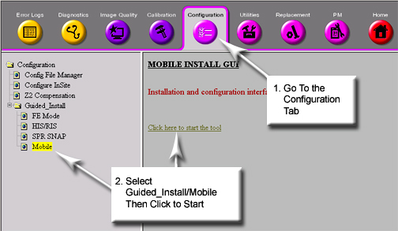
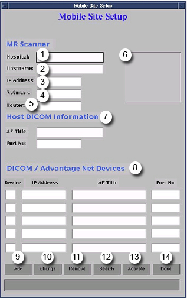
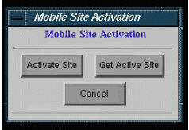

Operating Documentation
Direction 5440000, Rev# 5
Signa HDxt Service Methods
Module Version 2.0, Version Date 3/25/09
Operating Documentation |
| Required Persons | Preliminary Reqs | Procedure | Finalization |
|---|---|---|---|
| 1 | Not Applicable | 15 mins | Not Applicable |
The Mobile Site Setup feature provides the ability to change a mobile's Hospital Name, Host Name, IP Address, Netmask and the Host or Network DICOM information on the Mobile Site Setup window. The IIP InSIte connection will work at each site, provided it was checked out and has its own System ID in the Online Center database.
With Signa up and running in Scan mode, open the Service Desktop by clicking the [Service Desktop] button on the left side of the screen. (See Illustration 1.)
Illustration 1: Service Desktop Button
On the Service Desktop, open the Common Service Browser if not already running. Start the Mobile Tool as shown in Illustration 2.
Illustration 2: Guided Install Options

In the center of the Service Desktop Manager (shown in Illustration 2), select Mobile to open the Mobile Setup window.
When the command prompt asks for a password, enter the root password, operator and press <Enter>.
Refer to the Mobile Setup window in Illustration 3 and Table 1 for a description of each field on this window.
Illustration 3: Mobile Setup Window

Table 1: Mobile Setup Field Descriptions
| Field | Description |
|---|---|
| (1) Hospital Name | Enter the hospital name (up to 30 characters using A-Z, a-z, 0-9, & - only). |
| (2) Host Name | The system's host name can consist of up to 30 characters, and is stored in the configuration file. A GE Service Engineer enters the system's host name initially. |
| (3) IP Address | An IP address is four groups of integers with a dot between each group that uniquely identifies the computer on the network. Consult a GE Service Engineer for this information. |
| (4) Netmask | Netmask should be in hex and in the following format: 0xhhhhhhhh, where h is the hex digit. Consult a GE Service Engineer for this information. |
| (5) Router | This information will need to be provided by the site's network administrator. Typically, an IP Address will be provided (generally called Default Gateway). |
| (6) List of Previously Entered Hospitals | Select this key to choose a different hospital. |
| (7) AE Title and Port No. | Host DICOM information is optional for mobiles that interface with a Network DICOM device. Consult a GE Service Engineer for this information. |
| (8) Network DICOM Devices | Used to add up 5 network DICOM devices that interface with the mobile. Consult a GE Service Engineer for a list of IP addresses, AE Title and port number. |
| (9) Add | Select [Add] to add a hospital to the list. |
| (10) Change | Select [Change] to edit or modify previously stored hospital information. |
| (11) Remove | Select [Remove] to delete a hospital from the list. |
| (12) Search | Select [Search] to find a hospital on the list. Search options are executed by either Hospital or Host name. |
| (13) Activate | Select [Activate] to activate the selected hospital. |
| (14) Done | Select [Done] to exit the Mobile Site Setup window. |
Click [Done] to exit the Mobile Site Setup window.
| NOTE: | Mobile Site Activation is opened by clicking (13) [Activate]. |
Illustration 4 displays the Mobile Site Activation window.Table 2 offers an description of each button.
Illustration 4: Site Activation window

Table 2: Mobile Site Activation Field Descriptions
| Button | Description |
| (1) Activate Site | Select this button to activate a different hospital. A reboot is required with this selection. |
| (2) Get Active Site | Select this button to use the currently active hospital and its network and DICOM information. A reboot is not required. |
| (3) Cancel | Select this button to cancel a selection and close the Mobile Site Activation window. |
Select [Get Active Site] to obtain the currently active hospital's configuration Host Name, IP Address, Netmask, and Host or Network DICOM information for the Mobile Site Setup window. Mobile site information is saved with SaveInfo.
The Applications feature is used to update the image annotation with the appropriate name for the hospital or outpatient facility.
Below are some general considerations:
Periods, commas, or apostrophes (non-alphanumeric characters) are not valid for hospital names. For example: “St. Luke's” is invalid, whereas “St Lukes” is valid.
Purchased options and features stay with the mobile unit and will not change from site to site. To add a hospital to the list, the minimum entry is the MR Scanner information (Hospital, Host Name, IP Address, Netmask and Router).
Hospital Name, Host Name, IP Address, Netmask, Router, Host or Network DICOM information will have to be obtained from the site's network System Administrator before attempting to add a new system.
If changes are made to DICOM or network information in the Browser or Install, the entry in the list needs to be deleted and re-entered.
Only Activate Site requires a reboot of the system.
In order to add the current hospital to the list of previously entered sites, select [Get Active Site] from the Mobile Site Activation window.
The Mobile Site Setup window will prompt for information to be entered into the mobile database.
If <Yes> is selected, the hospital is added. If the Mobile Site Setup window does not provide a prompt, the hospital name is already in the mobile database.
With Signa up and running, open the Mobile Setup window. (See Illustration 3.)
Select a hospital from the list on the Mobile Site Setup window. (See Illustration 5.)
Illustration 5: Site List

Select [Activate].
Select [Activate Site] on the Mobile Site Activation menu. (See Illustration 6.)
Illustration 6: Site Activation Pop-Up Window

If another pop-up displays, click [Continue].
Select [Done].
Click [Yes] on the Exit Mobile GUI dialog box. (See Illustration 7.)
Illustration 7: Exit Mobile GUI Dialog Box

Shut Signa down from the Service Desktop, then restart. The system will display the updated information for the selected hospital.
With Signa up and running, open the Mobile Site Setup window. (See Illustration 3.)
Select [Activate] on the Mobile Site Setup window.
Select [Get Active Site] on the Mobile Site Activation menu. (The Mobile Site Setup window will be updated using the currently active hospital's information. See Illustration 4.)
| NOTE: | If the hospital name is not in the mobile database, the system will ask if the hospital information should be added. Select [Yes] to add it. (Refer to Applications and Considerations, Step 2.) |
Select [Done] on the Mobile Site Setup window.
On the Exit Mobile GUI menu, select [Yes].
With Signa up and running, access the Mobile Setup window. (SeeStarting the Mobile Setup Tool.)
Select [Add] on the Mobile Site Setup window.
At the minimum, enter the Hospital Name, Host Name, IP Address, Netmask and Router. Consult with a GE Service Engineer for this information if unknown.
Click [Add] again.
If the newly added hospital needs to be activated, proceeds as follows:
Select the new hospital from the list.
Select[ Activate] on the Mobile Site Setup window.
Select [Activate Site] on the Mobile Site Activation menu. (See Illustration 4.)
Select [Continue].
Select [Done] on the Mobile Site Setup window.
On the Exit Mobile GUI menu, select [Yes]. (See Illustration 7.)
Shut Signa down from the Service Desktop and restart.
Perform a quick test scan. The system should now display the correct site information. If not, repeat the procedure in Starting the Mobile Setup Tool.